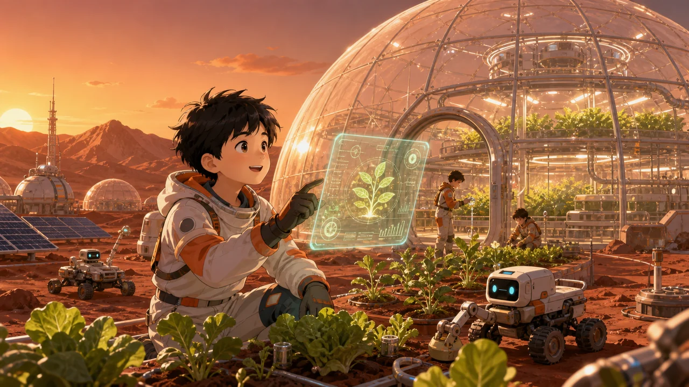
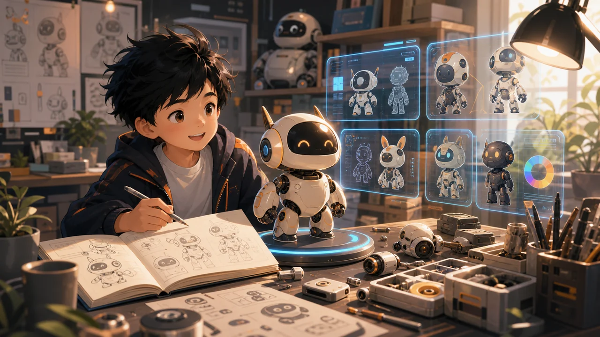

VOICE · 01
独立思考
“先给我一个思路，我确认没问题再做。”
学生原声
先用 AI 让孩子自己投入地自学文化课——快的一天、慢也只要三天；然后带着成绩和兴趣，挑战真实的商业项目。


我们不直接谈创业。先把一学期的成绩拿到手，再上真战场——两步，缺一不可。
孩子自己规划、自己提问——不是我们逼着学。
快的一天，慢的三天。
把想法变成真产品。
站上路演台，讲成一门生意。
数学，可能是孩子最讨厌的学科。左边，是跟着课堂进度走的一学期；右边，是 AI 带孩子自学的一天——定计划、换着花样讲、用游戏记、随时考。
不只看完成了什么，也听听他们怎样思考、怎样判断、怎样把学习变得更有趣。
“先给我一个思路，我确认没问题再做。”
“我希望能在这个游戏里面学习，又能玩。”
“背课文太难了，我就让 AI 把它变得更有趣一点。”
商业项目不是过家家。孩子在一个完整项目里，同时练到产品设计、AI 编程、商业逻辑——这三种能力，会陪他走很远。
从真实用户的真实问题出发，学会定义一个产品：为谁做、解决什么、做成什么样。
不背语法，用 AI 把想法变成真的能打开的网站和工具，理解代码背后的逻辑。
用户是谁、凭什么付费、怎么增长——把项目讲成一门生意，而不只是做完它。
孩子不是被逼着坐住的。三个机制，让他自己想往下学。
一学期的知识点变成一张看得见的地图：今天攻哪关、下一关是什么，进度握在孩子自己手里。
每答对一次、每攻克一个难点，就收进一枚图鉴——像集卡一样，孩子会想把它集满。
AI 会在第二天、一周后回头考他。不是考倒孩子，是让记住的东西再也忘不掉。
项目可以被打开、被浏览、被展示。
围绕兴趣建立主题，积累内容资产。
相信自己可以用 AI 做出真实东西。
她把一门历史课拆成故事视频、闯关测评、历史辩论与学习总结——每一部分，都由孩子自己讲出来。
三位家长从不同角度看到的变化：从愿意来，到愿意创造，再到愿意自己学习。
孩子本来有些抵触，不太想来。上完以后却主动对我说：“妈妈，我觉得这个课挺好的，谢谢你坚持让我来。”一天完成了下学期数学，测试题全对；第二天又完成了半学期语文。看到孩子把自己的长处发挥出来，我真的特别开心。
以前我只知道孩子喜欢海洋动物，没想到他真的能用 AI，把环保、救助海洋动物、解决海洋污染这些想法做成游戏和动画片。原来孩子的想象力不只是说说而已，真的可以被创造出来。
我们因为学习这件事，关系紧张了很长时间。没想到短短几天，孩子重新对学习有了兴趣。现在我只需要和他约定一个小激励，他就愿意自己努力地用 AI 学习。花得比以前少，改变却远超预期，这笔钱真的太值了。
从“想保护海洋动物”出发，孩子把污染问题做成了一段可浏览、可分享的视觉旅程。
打开《一只塑料瓶的 450 年》 →
扫码预约咨询 · 添加微信了解课程安排